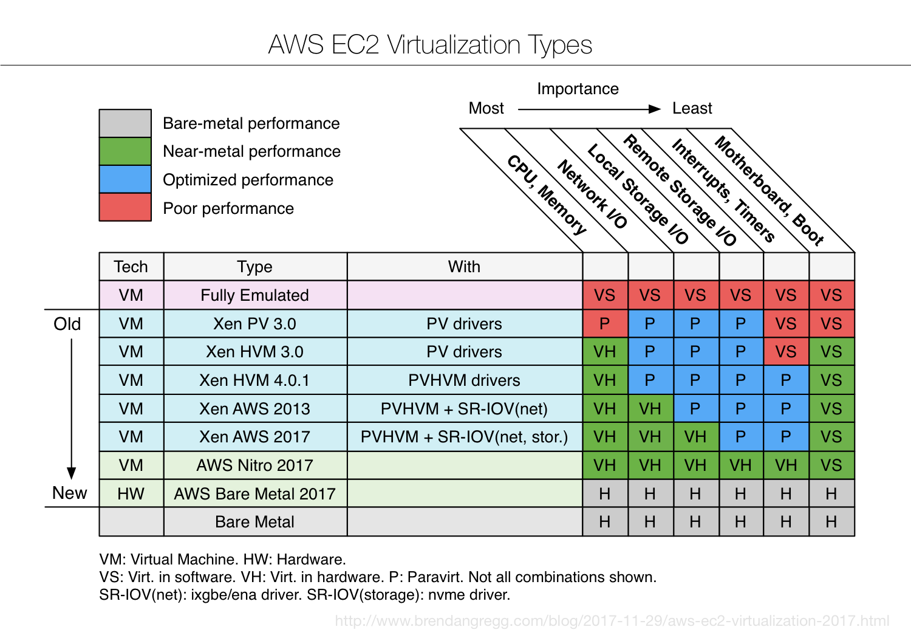
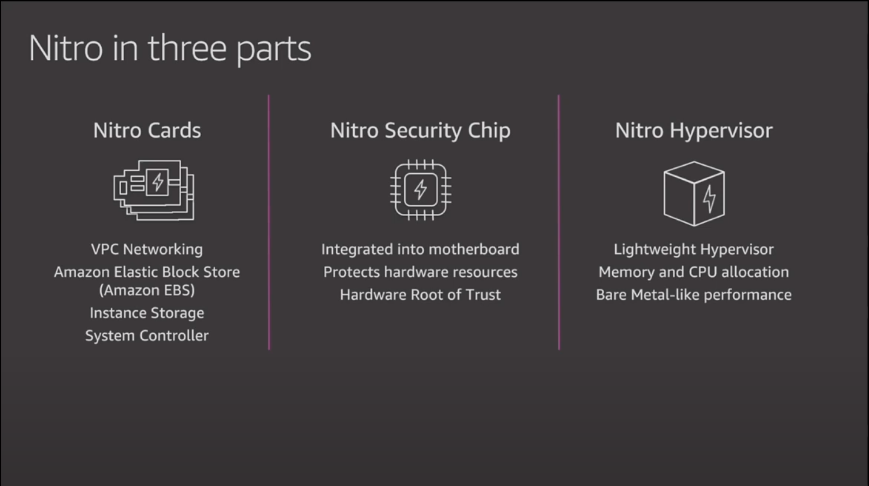
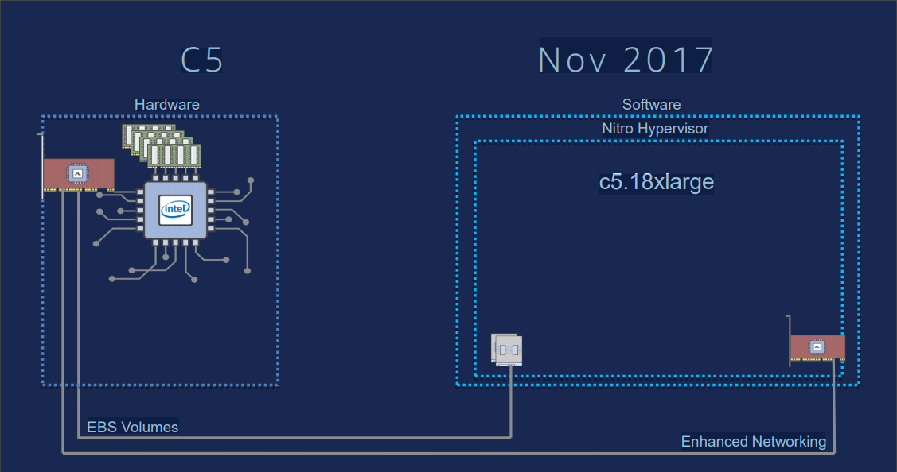
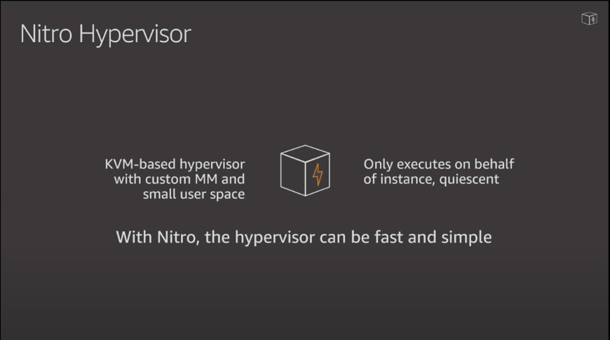
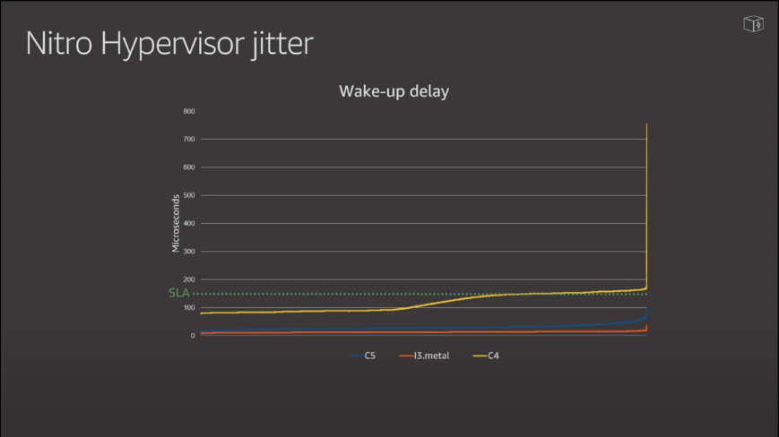
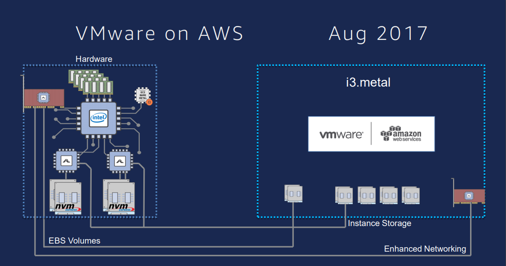

AWS Virtualization
AWS Virtualization Evolution History
AWS virtualization evolution history: cpu/memory, io(network, storage), hypervisor.

AWS Nitro System
AWS nitro system: nitro card, nitro security chip, nitro hypervisor.
- Nitro System
 - Nitro Diagram：simple and clean
 - Nitro hypervisor based on KVM
 - Nitro hypervisor jitter：close to bare metal performance
 - Nitro next: has published Graviton(arm) and amd instance, closed-loop of public cloud ecology
A Tip of AWS Ecosystem Strategy
- Alliance with vmware, seize traditional IT customers, and lead the data to AWS(Data is the portal)
